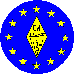

EUROPEAN CW ASSOCIATION
(EuCW)
Objectives and
Constitution
OBJECTIVES
The objective of EuCW is to form an association of independent
European amateur radio CW clubs. Using the Association as a
platform, member-clubs may exchange ideas and information, arrange
various activities involving mutual participation, and generally
co-operate for the benefit of amateur radio CW
operation.
**********************************************************************
CONSTITUTION
ARTICLE I
Name and purpose of the Association
Sec.1. The
Association is known as "THE EUROPEAN CW ASSOCIATION" (EuCW).
Sec.2. The purpose of the Association is: By the
co-operation of member-clubs, to create support and encouragement
for amateur radio CW activity and to defend such activity when it
is threatened in any way.
ARTICLE II
Membership
Sec.1. Membership
of the Association consists of those clubs who have signed the
certificate of co-operation.
Sec.2. Any amateur radio CW club submitting
satisfactory evidence of having 100 or more licensed individual
members may apply for Full (voting) membership of EuCW. Any amateur
radio club submitting satisfactory evidence of having 5 to 99
licensed individual members may apply for Restricted, (non-voting)
membership of EuCW. Such applications will be approved provided
none of the member-club raise any objection.
Sec.3. There is no membership fee.
Sec.4. Any member-club may withdraw from the
Association by submitting a written statement of resignation.
Sec.5. Any member-club consistently failing to
support EuCW activities and failing to give satisfactory
reassurances to the Chairman concerning future support shall
normally, after a period of two years of such lack of support, be
excluded from membership of EuCW. It is the responsibility of the
Chairman to report the circumstances to the Association, via the
EuCW Bulletin, and to recommend termination of membership if this
seem appropriate.
ARTICLE III
Government and Representation
Sec.1. The
Association is self-governing. Every three years one member-club
having Full membership of the Association shall nominate the "EuCW
Chairman". Such clubs shall take it in turn to nominate the
Chairman in accordance with the sequence of the following list.
When a member-club is unable to nominate a Chairman at the
appropriate time the retiring Chairman has responsibility to seek
nominations from other member-clubs and to hold an election among
Full member-clubs if more than one valid nomination is
received.
LIST; SCAG; AGCW-DL; G-QRP; HSC, VHSC, BENELUX-QRP; INORC; HCC;
BTC; UFT; SHSC; FISTS; FOC. New member-clubs are to be added to the
end of this list as they become Full members of the
Association.
Sec.2. Each member-club is represented within the
Association by an appointed "EuCW Communications Manager" (ECM) who
must have a knowledge of the English language.
Sec.3. The EuCW is officially represented by the
"EuCW Chairman". The term of office of the EuCW Chairman is 3
years.
Sec.4. Member-clubs may use the official
emblem of the Association.
ARTICLE IV
Communication and Information
Sec.1. The official
language for all communications within EuCW is the English
language.
Sec.2. The Chairman shall send an EuCW Bulletin to
all ECMs once every three months containing news and information of
EuCW interest.
Sec.3. Each ECM is required to keep all other ECMs
informed concerning matters of EuCW interest, normally via the
Chairman and the EuCW Bulletin, but by direct communication when
there is insufficient time to circulate important information by
normal means.
Sec.4. ECMs are responsible for promoting
awareness and support of EuCW activities within the membership of
their own clubs and encouraging co-operation between their own
clubs and other EuCW member-clubs. They are also responsible for
publicising EuCW activities in the national amateur radio magazines
in their own countries.
ARTICLE V
Amendments
Sec1. Amendments to this Constitution may be initiated by any Full member-club, through its ECM, or by the EuCW Chairman. Such amendments require the approval of at least two thirds of the Full member-clubs, expressed through their representatives (ECM's), for their enactment.
Draft revision of Objectives
and Constitution. Revised November 1994.
Note: See History file for a complete listing of EuCW clubs ordered by entry date
|
Two logo formats are generally used, a rhombic one (left) and a round one (right). The use of the round boundary is optional. The round format may lead to unintended political associations and should be used with care. |  |